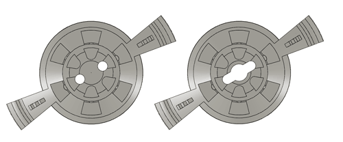

Multi-site implants
By modifying the location of the guide tube array in the drive body, multiple locations can be targeted from one flexDrive implant. The repository includes a variant for bilateral recordings from CA1. If you are developing a modified drive body suited for targeting other regions, please contribute the source files to the github repository.